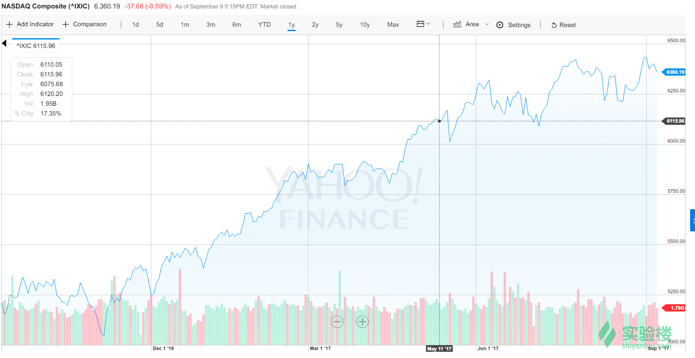
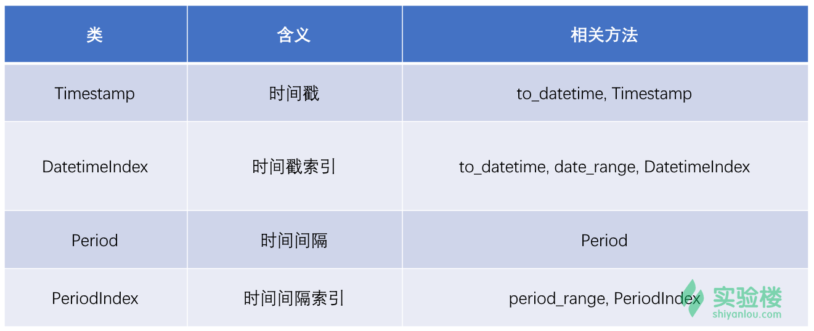
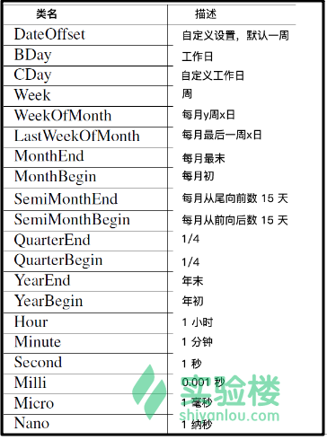

本实验为实验楼训练营课程 《Python 数据分析入门与进阶》的第七节，在该章节中我们将谈论数据分析过程中的时间序列分析。
时间序列分析是数据分析过程中，尤其是在金融数据分析过程中会经常遇到的。时间序列，就是以时间排序的一组随机变量，例如国家统计局每年或每月定期发布的 GDP 或 CPI 指数；24 小时内某一股票、基金、指数的数值变化等，都是时间序列。
下图截取自雅虎财经网站，它就是纳斯达克指数某一天内数值变化（时间序列）的可视化结果。

当我们拿到一些时间序列原始数据时，可能会遇到下面的一些情况：
数据表 a 和数据表 b 所采用的时间间隔不一致，需要重新采样。
……
面对这些问题，我们就要通过一些处理手段来获得最终想要的数据。本节课程中，我们会继续用到 Pandas 提供的时间序列处理模块，下面先看一些基本的方法和操作。
目前，Pandas 针对时间序列处理的类和方法如下：

我们按照顺序来看一看这些方法可以做什么。
时间戳，即代表一个时间时刻。我们可以直接用 pd.Timestamp()来创建时间戳。我们使用 ipython 演示，在重点中通过 anaconda/bin/ipython 打开。（小提示：使用 ipython 时，可以通过 Tab 键完成代码自动补全。）
In [1]: import pandas as pd
In [2]: pd.Timestamp("2017-1-1")
Out[2]: Timestamp('2017-01-01 00:00:00')
In [3]: pd.Timestamp(2017,10,1)
Out[3]: Timestamp('2017-10-01 00:00:00')
In [4]: pd.Timestamp("2017-1-1 12:59:59")
Out[4]: Timestamp('2017-01-01 12:59:59')
我们可以看到，单个时间戳为 Timestamp 数据，而时间戳以列表形式存在时，Pandas 将强制转换为 DatetimeIndex。此时，我们就不能再使用 pd.Timestamp()来创建时间戳了，而是 pd.to_datetime()来创建：
In [6]: pd.to_datetime(["2017-1-1","2017-1-2","2017-1-3"])
Out[6]: DatetimeIndex(['2017-01-01', '2017-01-02', '2017-01-03'], dtype='datetime64[ns]', freq=None)
注意输出部分和上面的区别。
pd.to_datetime() 不仅仅可用来创建 DatetimeIndex，它还可以将对时间戳序列格式进行转换等操作。例如下面，常见的时间戳书写样式，都可以通过pd.to_datetime() 规范化。
In [7]: pd.to_datetime(['Jul 1, 2017', '2017-10-10', None])
Out[7]: DatetimeIndex(['2017-07-01', '2017-10-10', 'NaT'], dtype='datetime64[ns]', freq=None)
In [8]: pd.to_datetime(['2017/10/1', '2017.1.31'])
Out[8]: DatetimeIndex(['2017-10-01', '2017-01-31'], dtype='datetime64[ns]', freq=None)
对于欧洲时区普遍采用的书写样式，我们还可以通过 dayfirst=True 参数进行修正：
In [11]: pd.to_datetime('1-10-2017')
Out[11]: Timestamp('2017-01-10 00:00:00')
In [12]: pd.to_datetime('1-10-2017', dayfirst=True)
Out[12]: Timestamp('2017-10-01 00:00:00')
当然，Pandas 所熟悉的 Seris 和 DataFrame 格式的字符串，也可以直接通过 to_datetime 转换：
In [15]: pd.to_datetime(pd.Series(['2017-1-1', '2017-1-2', '2017-1-3']))
Out[15]:
0 2017-01-01
1 2017-01-02
2 2017-01-03
dtype: datetime64[ns]
In [16]: pd.to_datetime(['2017-1-1', '2017-1-2', '2017-1-3'])
In [16]: DatetimeIndex(['2017-01-01', '2017-01-02', '2017-01-03'], dtype='datetime64[ns]', freq=None)
In [17]: pd.to_datetime(pd.DataFrame({'year': [2017, 2017], 'month': [1, 2], 'day': [3, 4], 'hour': [5, 6]}))
Out[17]:
0 2017-01-03 05:00:00
1 2017-02-04 06:00:00
dtype: datetime64[ns]
其中：
pd.to_datetime(Series/DataFrame)返回的是Series。pd.to_datetime(List)返回的是DatetimeIndex。如果要转换如上所示的DataFrame，必须存在的列名有year，month，day。另外 hour, minute, second, millisecond, microsecond, nanosecond可选。
当我们在使用pd.to_datetime() 转换数据时，很容易遇到无效数据。有一些任务对无效数据非常苛刻，所以报错让我们找到这些无效数据是不错的方法。当然，也有一些任务不在乎零星的无效数据，这时候就可以选择忽略。
# 遇到无效数据报错
In [17]: pd.to_datetime(['2017-1-1', 'invalid'], errors='raise')
ValueError: Unknown string format
# 忽略无效数据
In [18]: pd.to_datetime(['2017-1-1', 'invalid'], errors='ignore')
Out[18]: array(['2017-1-1', 'invalid'], dtype=object)
# 将无效数据显示为 NaT
In [19]: pd.to_datetime(['2017-1-1', 'invalid'], errors='coerce')
Out[19]: DatetimeIndex(['2017-01-01', 'NaT'], dtype='datetime64[ns]', freq=None)
接下来，我们看一看生成 DatetimeIndex 的另一个重要方法 pandas.date_range。你应该可以从名字看出该方法的作用，我们可以通过指定一个规则，让 pandas.date_range 生成有序的 DatetimeIndex。
pandas.date_range 方法带有的默认参数如下：
pandas.date_range(start=None, end=None, periods=None, freq=’D’, tz=None, normalize=False,
name=None, closed=None, **kwargs)
常用参数的含义如下：
start= ：设置起始时间end=：设置截至时间periods= ：设置时间区间，若 None 则需要设置单独设置起止和截至时间。freq= ：设置间隔周期。tz=：设置时区。其中，freq= 参数是非常关键的参数，我们可以设置的周期有：
freq='s': 秒freq='min' : 分钟freq='H': 小时freq='D': 天freq='w': 周freq='m': 月freq='BM': 每个月最后一个工作日freq='W'：每周的星期日
# 从 2017-1-1 到 2017-1-2，以小时间隔
In [21]: pd.date_range('2017-1-1','2017-1-2',freq='H')
Out[21]:
DatetimeIndex(['2017-01-01 00:00:00', '2017-01-01 01:00:00',
'2017-01-01 02:00:00', '2017-01-01 03:00:00',
'2017-01-01 04:00:00', '2017-01-01 05:00:00',
'2017-01-01 06:00:00', '2017-01-01 07:00:00',
'2017-01-01 08:00:00', '2017-01-01 09:00:00',
'2017-01-01 10:00:00', '2017-01-01 11:00:00',
'2017-01-01 12:00:00', '2017-01-01 13:00:00',
'2017-01-01 14:00:00', '2017-01-01 15:00:00',
'2017-01-01 16:00:00', '2017-01-01 17:00:00',
'2017-01-01 18:00:00', '2017-01-01 19:00:00',
'2017-01-01 20:00:00', '2017-01-01 21:00:00',
'2017-01-01 22:00:00', '2017-01-01 23:00:00',
'2017-01-02 00:00:00'],
dtype='datetime64[ns]', freq='H')
# 从 2017-1-1 开始，以 1s 为间隔，向后推 10 次
In [23]: pd.date_range('2017-1-1',periods=10,freq='s')
Out[23]:
DatetimeIndex(['2017-01-01 00:00:00', '2017-01-01 00:00:01',
'2017-01-01 00:00:02', '2017-01-01 00:00:03',
'2017-01-01 00:00:04', '2017-01-01 00:00:05',
'2017-01-01 00:00:06', '2017-01-01 00:00:07',
'2017-01-01 00:00:08', '2017-01-01 00:00:09'],
dtype='datetime64[ns]', freq='S')
# 从 2017-1-1 开始，以 1H20min 为间隔，向后推 10 次
In [24]: pd.date_range('1/1/2017', periods=10, freq='1H20min')
Out[24]:
DatetimeIndex(['2017-01-01 00:00:00', '2017-01-01 01:20:00',
'2017-01-01 02:40:00', '2017-01-01 04:00:00',
'2017-01-01 05:20:00', '2017-01-01 06:40:00',
'2017-01-01 08:00:00', '2017-01-01 09:20:00',
'2017-01-01 10:40:00', '2017-01-01 12:00:00'],
dtype='datetime64[ns]', freq='80T')
除了生成 DatetimeIndex，我们还可以对已有的 DatetimeIndex 进行操作。这些操作包括选择、切片等。类似于对 Series 的操作。
In [31]: a = pd.date_range('2017-1-1',periods=10,freq='1D1H')
In [32]: a
Out[32]:
DatetimeIndex(['2017-01-01 00:00:00', '2017-01-02 01:00:00',
'2017-01-03 02:00:00', '2017-01-04 03:00:00',
'2017-01-05 04:00:00', '2017-01-06 05:00:00',
'2017-01-07 06:00:00', '2017-01-08 07:00:00',
'2017-01-09 08:00:00', '2017-01-10 09:00:00'],
dtype='datetime64[ns]', freq='25H')
# 选取索引为 1 的时间戳
In [33]: a[1]
Out[33]: Timestamp('2017-01-02 01:00:00', freq='25H')
# 对索引从 0 到 4 的时间进行切片
In [34]: a[:5]
Out[34]:
DatetimeIndex(['2017-01-01 00:00:00', '2017-01-02 01:00:00',
'2017-01-03 02:00:00', '2017-01-04 03:00:00',
'2017-01-05 04:00:00'],
dtype='datetime64[ns]', freq='25H')
上面，我们使用 freq='1D1H' 参数，可以生成间隔 1 天+ 1 小时的时间戳索引。而在时序数据处理中，我们还常用一种叫做 DateOffset 对象，它可以对时间戳索引进行更加灵活的变化。DateOffset 对象主要作用有：
*1. *可以让时间索引增加或减少一定时间段。
*2. *可以让时间索引乘以一个整数。
*3. *可以让时间索引向前或向后移动到下一个或上一个特定的偏移日期。
我们依旧针对上面的 a 索引进行处理：
In [1]: import pandas as pd
In [2]: from pandas import offsets
In [3]: a = pd.date_range('2017-1-1',periods=10,freq='1D1H')
In [4]: a
Out[4]:
DatetimeIndex(['2017-01-01 00:00:00', '2017-01-02 01:00:00',
'2017-01-03 02:00:00', '2017-01-04 03:00:00',
'2017-01-05 04:00:00', '2017-01-06 05:00:00',
'2017-01-07 06:00:00', '2017-01-08 07:00:00',
'2017-01-09 08:00:00', '2017-01-10 09:00:00'],
dtype='datetime64[ns]', freq='25H')
# 使用 DateOffset 对象让 a 依次增加 1 个月 + 2 天 + 3 小时
In [5]: a + offsets.DateOffset(months=1, days=2, hours=3)
Out[5]:
DatetimeIndex(['2017-02-03 03:00:00', '2017-02-04 03:00:00',
'2017-02-05 03:00:00', '2017-02-06 03:00:00',
'2017-02-07 03:00:00', '2017-02-08 03:00:00',
'2017-02-09 03:00:00', '2017-02-10 03:00:00',
'2017-02-11 03:00:00', '2017-02-12 03:00:00'],
dtype='datetime64[ns]', freq='D')
# 使用 DateOffset 对象让 a 向后偏移 2 周
In [6]: a + 2*offsets.Week()
Out[6]:
DatetimeIndex(['2017-01-15 00:00:00', '2017-01-16 01:00:00',
'2017-01-17 02:00:00', '2017-01-18 03:00:00',
'2017-01-19 04:00:00', '2017-01-20 05:00:00',
'2017-01-21 06:00:00', '2017-01-22 07:00:00',
'2017-01-23 08:00:00', '2017-01-24 09:00:00'],
dtype='datetime64[ns]', freq='25H')
更多DateOffset 对象列举如下：

上面，我们对 Timestamp 时间戳和 DatetimeIndex 时间戳索引都有了较为充分的认识。除此之外 Pandas 中还存在 Period 时间间隔和 PeriodIndex 时间间隔索引对象。它们用来定义一定时间跨度。
In [1]: import pandas as pd
# 1 年跨度
In [2]: pd.Period('2017')
Out[2]: Period('2017', 'A-DEC')
# 1 个月跨度
In [3]: pd.Period('2017-1')
Out[3]: Period('2017-01', 'M')
# 1 天跨度
In [4]: pd.Period('2017-1-1')
Out[4]: Period('2017-01-01', 'D')
# 1 小时跨度
In [8]: pd.Period('2017-1-1 12')
Out[8]: Period('2017-01-01 12:00', 'H')
# 1 分钟跨度
In [5]: pd.Period('2017-1-1 12:00')
Out[5]: Period('2017-01-01 12:00', 'T')
# 1 秒跨度
In [6]: pd.Period('2017-1-1 12:05:00')
Out[6]: Period('2017-01-01 12:05:00', 'S')
同样我们可以通过 pandas.period_range() 方法来生成序列：
In [9]: pd.period_range('2017-1','2018-1',freq='M')
Out[9]:
PeriodIndex(['2017-01', '2017-02', '2017-03', '2017-04', '2017-05', '2017-06',
'2017-07', '2017-08', '2017-09', '2017-10', '2017-11', '2017-12',
'2018-01'],
dtype='period[M]', freq='M')
Period，PeriodIndex支持的操作和Timestamp以及DatetimeIndex 非常相似，这里就不再重复赘述了。
我们可以注意几个细节，DatetimeIndex 的dtype 类型为 datetime64[ns]，而 PeriodIndex 的 dtype 类型为 period[M]。另外，对于 Timestamp和 Period 的区别，我们在单独拿出来看一下：
In [15]: pd.Period('2017-1-1')
Out[15]: Period('2017-01-01', 'D')
In [16]: pd.Timestamp('2017-1-1')
Out[16]: Timestamp('2017-01-01 00:00:00')
可以看到，上面代表是2017-01-01这一天，而下面仅代表 2017-01-01 00:00:00 这一时刻。
DatetimeIndex 之所以称之为时间戳索引，当然是它的主要用途是作为 Series 或者 DataFrame 的索引。下面，我们就随机生成一些数据，然后看一看如何对时间序列数据进行操作。
In [1]: import numpy as np
In [2]: import pandas as pd
# 生成时间索引
In [3]: i = pd.date_range('2017-1-1', periods=20, freq='M')
# 生成随机数据并添加时间作为索引
In [4]: data = pd.Series(np.random.randn(len(i)), index = i)
# 查看数据
In [5]: data
Out[5]:
2017-01-31 -1.233579
2017-02-28 0.494723
2017-03-31 -2.160592
2017-04-30 0.517173
2017-05-31 -1.984762
2017-06-30 0.655989
2017-07-31 0.919411
2017-08-31 0.114805
2017-09-30 -0.080374
2017-10-31 1.360448
2017-11-30 -0.417094
2017-12-31 0.555434
2018-01-31 1.659271
2018-02-28 -0.514907
2018-03-31 0.330979
2018-04-30 -0.707362
2018-05-31 -0.724524
2018-06-30 0.362518
2018-07-31 0.157280
2018-08-31 -0.724665
Freq: M, dtype: float64
上面就生成了一个以时间为索引的 Series 序列。其实，这就回到了对 Pandas 中 Series 和 DataFrame 类型数据操作的问题。下面演示一些操作：
# 检索 2017 年的所有数据
In [12]: data['2017']
Out[12]:
2017-01-31 -1.233579
2017-02-28 0.494723
2017-03-31 -2.160592
2017-04-30 0.517173
2017-05-31 -1.984762
2017-06-30 0.655989
2017-07-31 0.919411
2017-08-31 0.114805
2017-09-30 -0.080374
2017-10-31 1.360448
2017-11-30 -0.417094
2017-12-31 0.555434
Freq: M, dtype: float64
# 检索 2017 年 7 月到 2018 年 3 月之间的所有数据
In [13]: data['2017-07':'2018-03']
Out[13]:
2017-07-31 0.919411
2017-08-31 0.114805
2017-09-30 -0.080374
2017-10-31 1.360448
2017-11-30 -0.417094
2017-12-31 0.555434
2018-01-31 1.659271
2018-02-28 -0.514907
2018-03-31 0.330979
Freq: M, dtype: float64
# 使用 loc 方法检索 2017 年 1 月的所有数据
In [14]: data.loc['2017-01']
Out[14]:
2017-01-31 -1.233579
Freq: M, dtype: float64
# 使用 truncate 方法检索 2017-3-1 到 2018-4-2 期间的数据
In [17]: data.truncate(before='2017-3-1',after='2018-4-2')
Out[17]:
2017-03-31 -2.160592
2017-04-30 0.517173
2017-05-31 -1.984762
2017-06-30 0.655989
2017-07-31 0.919411
2017-08-31 0.114805
2017-09-30 -0.080374
2017-10-31 1.360448
2017-11-30 -0.417094
2017-12-31 0.555434
2018-01-31 1.659271
2018-02-28 -0.514907
2018-03-31 0.330979
Freq: M, dtype: float64
对于时序数据的处理，肯定不只是查询和切片这么简单。我们这里可能会用到 Shifting 方法，将时间索引进行整体偏移。
In [1]: import numpy as np
In [2]: import pandas as pd
# 生成时间索引
In [3]: i = pd.date_range('2017-1-1', periods=5, freq='M')
# 生成随机数据并添加时间作为索引
In [4]: data = pd.Series(np.random.randn(len(i)), index = i)
# 查看数据
In [5]: data
Out[5]:
2017-01-31 0.830480
2017-02-28 0.348324
2017-03-31 -0.622078
2017-04-30 -1.192675
2017-05-31 0.441947
Freq: M, dtype: float64
# 将索引向前位移 3 个单位，也就是数据向后位移 3 个单位，缺失数据 Pandas 会用 NaN 自动填充
In [8]: data.shift(3)
Out[8]:
2017-01-31 NaN
2017-02-28 NaN
2017-03-31 NaN
2017-04-30 0.830480
2017-05-31 0.348324
Freq: M, dtype: float64
# 将索引向后位移 3 个单位，也就是数据向前位移 3 个单位
In [9]: data.shift(-3)
Out[9]:
2017-01-31 -1.192675
2017-02-28 0.441947
2017-03-31 NaN
2017-04-30 NaN
2017-05-31 NaN
Freq: M, dtype: float64
# 将索引的时间向后移动 3 天
In [10]: data.shift(3,freq='D')
Out[10]:
2017-02-03 0.830480
2017-03-03 0.348324
2017-04-03 -0.622078
2017-05-03 -1.192675
2017-06-03 0.441947
dtype: float64
除了 Shifting 方法，重采样 Resample 也会经常用到。Resample 可以提升或降低一个时间索引序列的频率，大有用处。例如：当时间序列数据量非常大时，我们可以通过低频率采样的方法得到规模较小到时间覆盖依然较为全面的新数据集。另外，对于多个不同频率的数据集需要数据对齐时，重采样可以十分重要的手段。
In [1]: import pandas as pd
In [2]: import numpy as np
In [3]: i = pd.date_range('2017-1-1', periods=20, freq='D')
In [4]: data = pd.Series(np.random.randn(len(i)), index = i)
In [5]: data
Out[5]:
2017-01-01 0.384984
2017-01-02 0.341555
2017-01-03 -0.100246
2017-01-04 -0.660066
2017-01-05 0.007575
2017-01-06 2.402068
2017-01-07 -0.365657
2017-01-08 -0.853025
2017-01-09 0.588139
2017-01-10 0.047322
2017-01-11 0.213384
2017-01-12 1.056038
2017-01-13 -1.588518
2017-01-14 0.076655
2017-01-15 1.467056
2017-01-16 -1.877541
2017-01-17 0.003218
2017-01-18 -0.811914
2017-01-19 0.143571
2017-01-20 0.837088
Freq: D, dtype: float64
# 按照 2 天进行降采样，并对 2 天对应的数据求和作为新数据
In [6]: data.resample('2D').sum()
Out[6]:
2017-01-01 0.726539
2017-01-03 -0.760312
2017-01-05 2.409643
2017-01-07 -1.218682
2017-01-09 0.635461
2017-01-11 1.269422
2017-01-13 -1.511864
2017-01-15 -0.410485
2017-01-17 -0.808696
2017-01-19 0.980658
Freq: 2D, dtype: float64
# 按照 2 天进行降采样，并对 2 天对应的数据求平均值作为新数据
In [7]: data.resample('2D').mean()
Out[7]:
2017-01-01 0.363269
2017-01-03 -0.380156
2017-01-05 1.204821
2017-01-07 -0.609341
2017-01-09 0.317730
2017-01-11 0.634711
2017-01-13 -0.755932
2017-01-15 -0.205243
2017-01-17 -0.404348
2017-01-19 0.490329
Freq: 2D, dtype: float64
# 按照 2 天进行降采样，并选取对应 2 天的最大值作为新数据
In [9]: data.resample('2D').max()
Out[9]:
2017-01-01 0.384984
2017-01-03 -0.100246
2017-01-05 2.402068
2017-01-07 -0.365657
2017-01-09 0.588139
2017-01-11 1.056038
2017-01-13 0.076655
2017-01-15 1.467056
2017-01-17 0.003218
2017-01-19 0.837088
Freq: 2D, dtype: float64
# 按照 2 天进行降采样，并将对应 2 天数据的原值、最大值、最小值、以及临近值列出
In [10]: data.resample('2D').ohlc()
Out[10]:
open high low close
2017-01-01 0.384984 0.384984 0.341555 0.341555
2017-01-03 -0.100246 -0.100246 -0.660066 -0.660066
2017-01-05 0.007575 2.402068 0.007575 2.402068
2017-01-07 -0.365657 -0.365657 -0.853025 -0.853025
2017-01-09 0.588139 0.588139 0.047322 0.047322
2017-01-11 0.213384 1.056038 0.213384 1.056038
2017-01-13 -1.588518 0.076655 -1.588518 0.076655
2017-01-15 1.467056 1.467056 -1.877541 -1.877541
2017-01-17 0.003218 0.003218 -0.811914 -0.811914
2017-01-19 0.143571 0.837088 0.143571 0.837088
采样操作起来非常简单，只是需要注意采样后对新数据不同的处理方法。上面介绍的是降频采样。我们也可以升频采样。
继续沿用上面 data 的示例数据
# 时间频率从天提升到小时，并使用相同的数据对新增加行填充
In [11]: data.resample('H').ffill()
Out[11]:
2017-01-01 00:00:00 0.384984
2017-01-01 01:00:00 0.384984
2017-01-01 02:00:00 0.384984
2017-01-01 03:00:00 0.384984
2017-01-01 04:00:00 0.384984
...
2017-01-19 21:00:00 0.143571
2017-01-19 22:00:00 0.143571
2017-01-19 23:00:00 0.143571
2017-01-20 00:00:00 0.837088
Freq: H, Length: 457, dtype: float64
# 时间频率从天提升到小时，不对新增加行填充
In [12]: data.resample('H').asfreq()
Out[12]:
2017-01-01 00:00:00 0.384984
2017-01-01 01:00:00 NaN
2017-01-01 02:00:00 NaN
...
2017-01-19 23:00:00 NaN
2017-01-20 00:00:00 0.837088
Freq: H, Length: 457, dtype: float64
# 时间频率从天提升到小时，只对新增加前 3 行填充
In [13]: data.resample('H').ffill(limit=3)
Out[13]:
2017-01-01 00:00:00 0.384984
2017-01-01 01:00:00 0.384984
2017-01-01 02:00:00 0.384984
2017-01-01 03:00:00 0.384984
2017-01-01 04:00:00 NaN
2017-01-01 05:00:00 NaN
...
2017-01-19 21:00:00 NaN
2017-01-19 22:00:00 NaN
2017-01-19 23:00:00 NaN
2017-01-20 00:00:00 0.837088
Freq: H, Length: 457, dtype: float64
本章节学习了 Pandas 针对时间序列分析处理的一些方法。我们用到的类和方法虽然不多，但使用起来非常灵活多变。很多时候，我们需要的结果存在多种不同的实现途径，所以这些方法看起比较杂乱。而学习时，一定要对照本章一开始给出的图表进行，就能达到事半功倍的效果。
由于 Pandas 实验序列处理函数参数较为复杂，建议阅读一遍 官方文档。